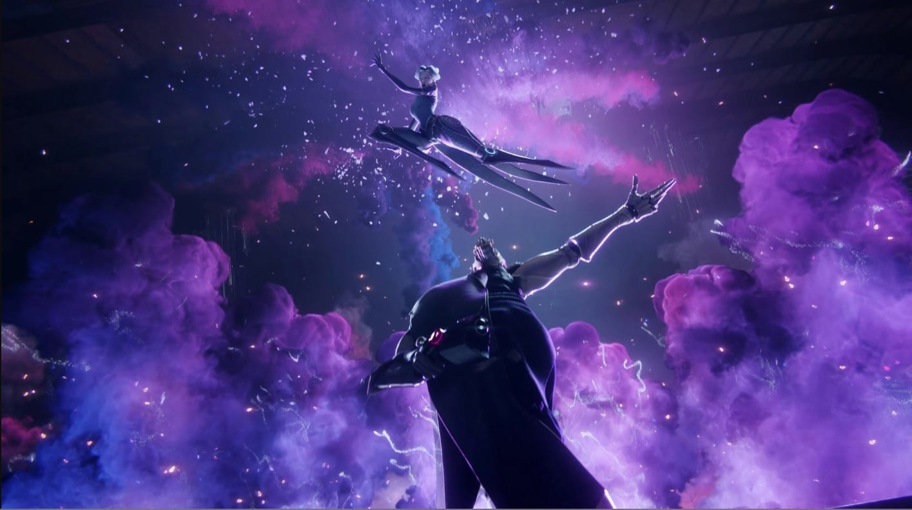

Life Lessons

"Life is not fair, not even close to such a reality. Personality ,abilities, intelligence, upbringing etc. These are all attributes, skill sets, advantages and disadvantages, we are all born with. But we aren't all equal and the decisions in which take in life, make the game of life even more fun to play." - MJ Ndlovu
I played League of legends for close to 8 years now and have played the game of life for about 25. No game to my knowledge has even come close to the realism or has explored the parallels between the, complexities of life and the hell-scape which is League Of Legends. League (as will be referenced) revealed valuable life lessons that could only be drown from the gaming experience by a non-social, shut in and highly analytical player, unnessarially dedicated to the persuit of being the best at this role and character
So lets begin,
Once upon a virtual realm, a bustling world of competition and strategy existed known as League of Legends. This game, much like life, unfolded with a myriad of paths and goals. Each player could embody a champion, a unique avatar, symbolizing the diversity of roles and aspirations that exist in the real world. From the nimble assassins to the steadfast tanks, the champions mirrored the diverse personas we encounter daily.
Amid the summoner's rift, where battles were waged, the power of teamwork shone like a guiding light. Just as success in League required players to collaborate and synergize, the game mirrored real life, where endeavors often thrived through collective effort. The champions knew that their abilities, when combined harmoniously, could achieve feats greater than individual prowess. This echoed the essence of cooperation in our own journeys, highlighting the strength that comes from embracing diverse perspectives and skills.
As seasons changed in the League, so did strategies and challenges. New patches and meta shifts demanded rapid learning and adaptation, teaching players that in the face of change, resilience flourished. The game illustrated the importance of embracing new knowledge and skills, a reminder that real life, too, is a perpetual learning process. Just as champions adjusted to the ever-evolving battleground, people must navigate life's dynamic nature with a willingness to grow and transform.
Victory in League often emerged from the ashes of defeat, and champions who embraced resilience after failure forged a path to triumph. As players rebounded from losses, they learned to confront disappointments head-on. The game's harsh lessons mirrored life's hardships, where setbacks were inevitable. The champions' unwavering spirit illustrated that in both realms, the ability to rise above failures was a defining characteristic of success.
Strategizing in League was a game of wits and choices. In the heat of battle, players made split-second decisions that could sway the outcome. This reflection of life's pivotal choices emphasized the significance of thinking critically. Just as champions considered their actions' consequences, individuals in the real world were encouraged to make informed decisions that shaped their futures.
Yet, League of Legends was more than a mere game; it was a repository of profound life lessons. The diverse cast of champions underscored the beauty of embracing individuality. The cooperative gameplay echoed the power of collaboration, emphasizing that together, we achieve more. Adapting to the evolving landscape of the game mirrored our need to navigate life's changes with an open heart. Resilience in the face of defeat echoed the value of learning from failures. And the strategic essence of League translated into a reminder of the importance of making thoughtful choices in the journey of life.
Thus, within the digital arenas of League, a reflection of life's complexities emerged. Beyond entertainment, the lessons derived from pixels and code were woven into the fabric of real experiences, guiding players to become better strategists, collaborators, and adaptable individuals. As the Nexus of the virtual world and the fabric of reality converged, players embarked on quests of self-improvement, armed with wisdom drawn from the realms of both pixels and possibility.